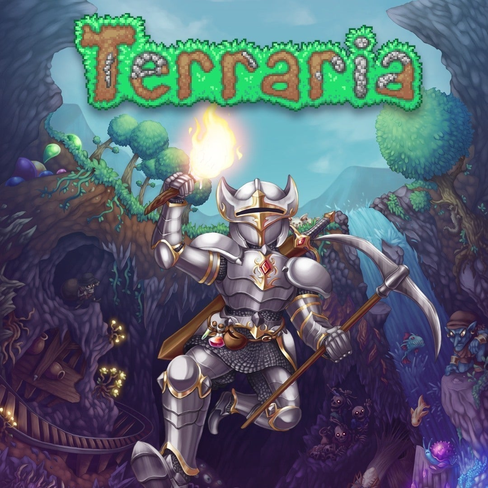
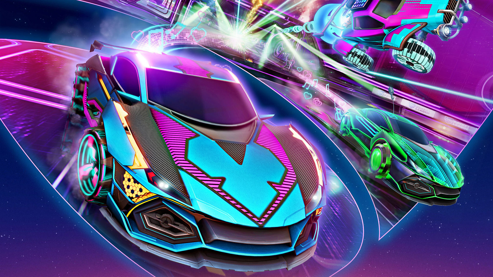

O que é um Jogo Indie?
Indie é um jeito “carinhoso” de abreviar a palavra “independente”. No contexto de jogos, chamamos de independentes aqueles que não são feitos por grandes produtoras, partindo de iniciativas bem menores e, por consequência, com orçamentos bem menores. Temos até games feitos por uma única pessoa na categoria, como Stardew Valley.
Jogos indie costumam ser associados com produções menores, com menos investimento e muitas vezes comprometimentos técnicos na parte gráfica. Em contrapartida, os desenvolvedores desses jogos costumam se esforçar para trazer uma experiência diferenciada de alguma maneira, seja por novas mecânicas, artes originais estilizadas ou outra coisa do tipo.
Da mesma maneira que pode não ser muito fácil definir o que é um jogo indie, o sucesso do segmento também não é explicado de um jeito simples. Estamos falando de um estilo de game que convida toda uma variedade de criadores ao redor do mundo, cada um com suas ideias e peculiaridades, não existe um esforço conjunto ou regrado do que faz um game desse tipo se sair bem.
Qual a importância de um jogo Indie?
Os jogos independentes sempre fizeram parte da indústria de games. Antigamente, eles estavam presentes e praticamente restritos aos computadores. A dificuldade para conseguir os kits de desenvolvimento para consoles e a publicação dos jogos desanimavam quase todos os desenvolvedores. O tempo passou. Os celulares ficaram mais potentes, surgiram os tablets e com eles, uma enchorrada de jogos independentes.
Títulos como Braid (Multi), Limbo (Multi) e Journey (PS3/PS4), criados por pequenas equipes de desenvolvimento, ganharam prêmios importantes e geraram muito dinheiro para seus criadores. Eles foram possíveis graças a algumas mudanças na indústria de games: A criação de ferramentas prontas para desenvolver um jogo, a multiplicação de plataformas para vendê-los, e da inovação e qualidade desses jogos.
Quais os jogos indies mais influentes?
- Undertale
Undertale é um RPG de escolhas. Você pode matar, tentar dialogar e mesmo converter os inimigos em bons aliados. A missão é sair do submundo e voltar à superfície da Terra, enfrentando demônios e puzzles nas masmorras.
- Minecraft
O popular game é de sobrevivência e exploração em mundo aberto. Ou seja, é necessário coletar recursos, se alimentar e construir abrigos para se proteger de inimigos – principalmente à noite. O grande atrativo de Minecraft é a possibilidade infinita de construção. Provavelmente você já deve ter visto por aí fãs que passaram muitas horas para criar ambientes colossais, ou até mesmo reproduzir cenários marcantes de filmes, como Hogwarts.
- Terraria
Se Minecraft é um jogo 3D de sobrevivência e exploração, Terraria segue a mesma linha, mas em 2D. Assim como o primeiro da lista, o game possibilita construções, tem inimigos e há ciclos de dia e de noite – sendo a fase noturna mais perigosa. O grande diferencial deste game é a escavação. Você precisa cavar e desvendar o mundo subterrâneo para encontrar recursos.

- Rocket League
Que tal uma partida de futebol em que os “jogadores” são carros? Rocket League é isso e muito mais. Apesar do modo mais popular ser o esporte em que somos pentacampeões, também há hóquei e basquete no jogo. A quantidade de players em cada equipe varia de 1v1 a 4v4.

- Cuphead
Cuphead é encantador por seu visual dos desenhos do início da década de 1930. Mais um jogo em plataforma com puzzles e muitos inimigos para derrotar, incluindo o próprio Diabo! Rivaliza com Dark Souls em termos de dificuldade, por isso cuidado para não quebrar o joystick de raiva.